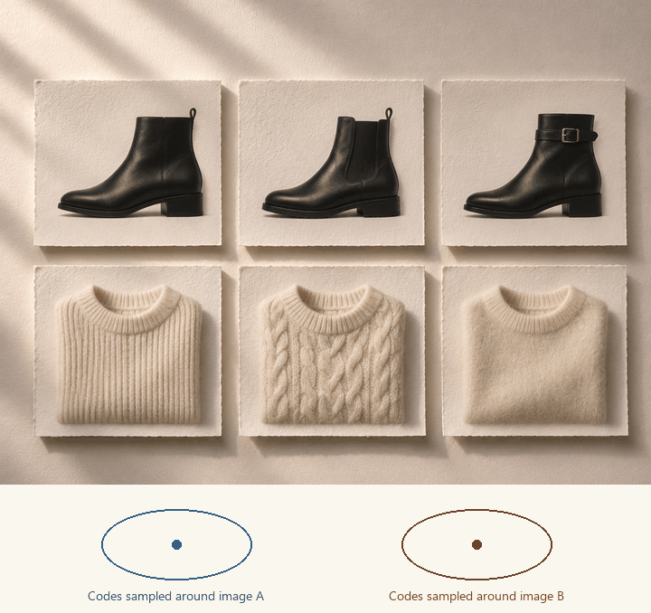
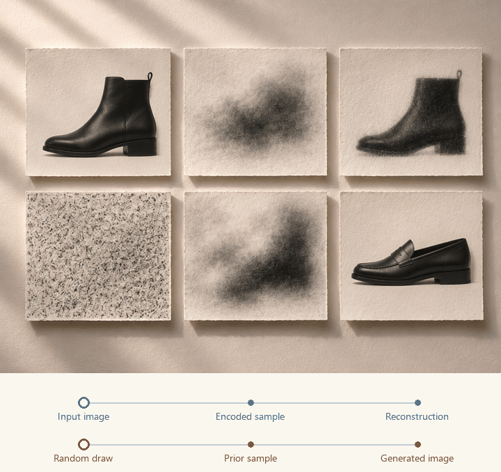

CS236 — What Happens Between Two Good Reconstructions?
The part of a variational autoencoder that made me stop was the line that samples a latent vector. An ordinary autoencoder can turn an image into a point and learn to reconstruct it from there. In a VAE, the encoder gives me a distribution. I sample a point from it and ask the decoder to reconstruct the image.
The line I had been reading past
In code, the encoder produces a mean and a scale, then the sample is built by drawing standard noise, scaling it, and shifting it by the mean. That little rearrangement matters. The randomness comes from a separate draw, while the shift and scale are operations the training gradients can flow through. The model can learn both where to put a distribution for an image and how spread out to make it.
I’d been picturing the decoder as getting one clean coordinate with some accidental jitter. It helped to turn that around in my head and think about the decoder’s training examples. Every time it sees the same sweater, the exact code can change. Over training it has to give sensible answers for a region, even though the encoder produced its parameters from a single image.
At first that felt like making the decoder’s job harder for no reason. If I have a code that works, why perturb it?

The question started to make sense when I thought about what I’d do after training. For reconstruction, I can feed the encoder an image and let it tell me where to look in latent space. For generation, I want to start by drawing a latent code from a simple distribution. Now the decoder has to handle the places where those draws actually land.
That exposes a gap I hadn’t appreciated. A decoder can reconstruct the images I give it very well while behaving unpredictably in the regions between their codes. Sampling around each encoded image gives the decoder practice in a neighborhood. The regularization term also pushes those encoded distributions toward the prior I’ll sample from later.

Three images I’d put next to each other
First I’d show the input and its reconstruction. A missing collar or a softened edge is easy to spot and tells me what information made it through the bottleneck. Then I’d show an interpolation between two encoded images. Does the decoder make anything recognizable halfway between them? Finally I’d draw new codes from the prior, which is what I actually want to use when there’s no image to encode.
Those images answer different questions. An interpolation can look smooth because the particular endpoints happen to lie in a friendly neighborhood. A few nice prior samples can miss whole categories. I’d use a fixed batch of prior draws across the regularization settings and show the whole grid, including the things that don’t look like any piece of clothing.
I’d also check whether the latent variable is doing much work at all. For a given input, does changing its code make a meaningful difference to the reconstruction? If I turn up the pressure to match the prior and the decoder starts producing similar-looking clothes regardless of the code, that smooth latent space may have come at the expense of useful information.
Fashion-MNIST gives this comparison a manageable setting. Keep the architecture fixed, vary the strength of that regularization, and put three views side by side: reconstructions, interpolations between two encoded images, and fresh samples from the prior. I’d be especially interested in a model that reconstructs sharper sleeves or collars but produces less recognizable clothes when I sample freely. That’s the kind of result I could miss completely if I only looked at reconstruction loss.
One sample through the encoder
Suppose the encoder predicts a one-dimensional mean of two and a standard deviation of one half. A standard noise draw of negative one gives a latent code of one and a half. A draw of positive one gives two and a half. A decoder reconstructing that one input therefore sees different codes around two. A decoder generating from a standard normal prior will also see many codes near zero. That gap is why I want to inspect reconstructions and prior samples separately.
The setting I’d actually choose
I can imagine wanting a different setting depending on why I built the model. If I’m compressing images and want to get their details back, I’d care a lot about the first set of pictures. If I’m using the model as a generator, I’d pay more attention to the prior samples. That seems obvious once those grids are next to each other. It was less obvious when I was staring at one scalar loss and assuming a smaller value meant the whole model had improved.
The question I came away with was simple. Where do the codes come from when I actually use the model? The answer changes what I need to check during training. Stanford CS236